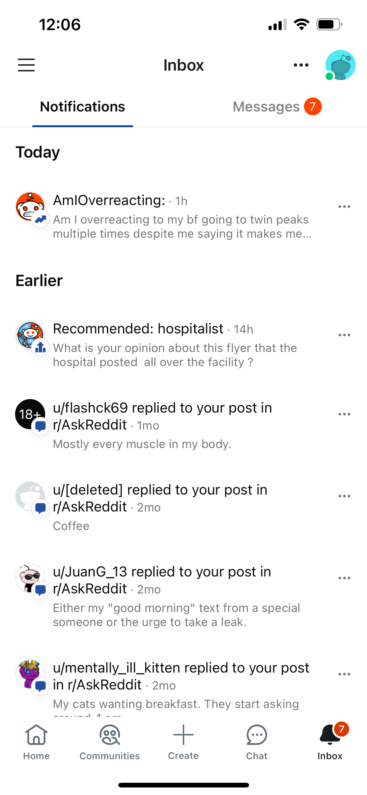
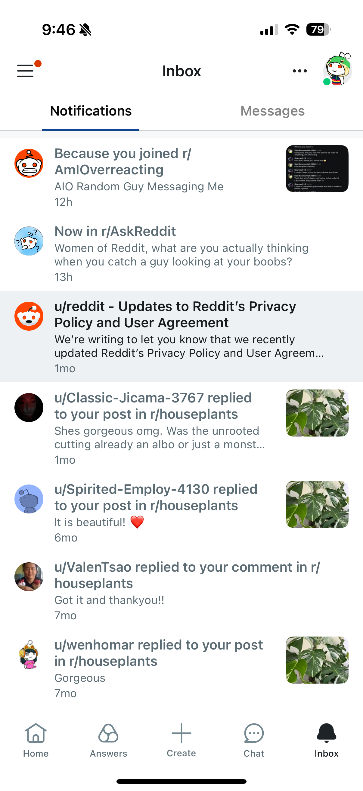

Hover annotations to see linked changes
Before — One-off builds

1
Icon-based type indicator
Low comprehension — users couldn’t parse type at a glance
2
Overflow menu for actions
Extra tap to reach secondary actions
3
Inline meta-data
Difficult to parse quickly; not scalable for multiple pieces of metadata
4
One-off build
No design system — each new type from scratch
After — Reusable component

1
Embedded copy replaces icons
Type communicated through language, not iconography
2
Swipe & long press
Platform-native patterns for secondary actions make room for a flex trailing element
3
Scalable meta-data
Pulling out meta data makes it easier to parse & accommodate different use cases
4
On design system
Scalable, reusable unit — new types in hours, not weeks